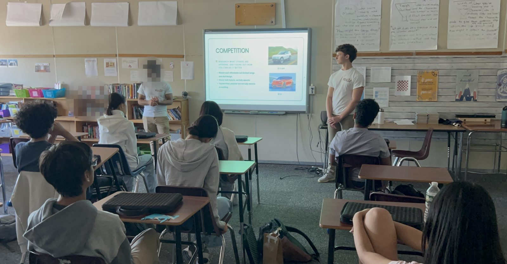

Futures Financials
Evidence is the third pillar
Teaching thousands of students produces something besides lessons: data.
We started in 2022 as a financial literacy program. It outgrew that.
Today the organization works across three pillars, and the third one is the reason this page exists.

Teaching at this scale produces data.
We use it to argue for better financial education policy, and to publish what we learn.
Three pillars
-
Education
Interactive curricula from personal finance through entrepreneurship, delivered by students to students. New Jersey's first Teen Teach-In started here.
-
Policy
Closing accessibility gaps in financial education, and easing the financial strain carried by young people.
-
Research
New findings on what actually improves financial health, drawn from the programs we run.
Research
-
Swiftonomics: The Impact of Taylor Swift’s Eras Tour Journal of Future Economists · Hans Patel (Co-CEO) was a co-author
A Fed Challenge team traces how the Eras Tour moved real money through the U.S. economy, using elasticity, derived demand and consumer surplus to explain the scale of it.
See full paper → -
Categorizing Consumer Grievances in Buy Now, Pay Later Services Geffen Alon · Student volunteer
Runs topic modeling over 5,000+ complaints filed with the Consumer Financial Protection Bureau and finds that what BNPL users actually complain about does not match what the research has been studying.
See full paper → -
Beyond the Mandate: Why High School Financial Literacy Requirements Are Necessary but Not Sufficient Arya Modi · Student volunteer
Thirty states now require a personal finance course, but this paper argues the mandate is the easy part: teacher preparation, curriculum quality and accountability decide whether it changes anything.
See full paper → -
Who Keeps the Aid? Targeting Aid to Control College Costs Student volunteer
Asks who actually ends up with federal college aid, and argues it works best when targeted at the lowest-income students, where colleges have the least room to absorb it.
See full paper → -
AI Exposure, Wages, and Employment: Augmentation vs. Substitution in the Labor Market FinMango Ambassador notes · Hans Patel, Co-CEO
If AI is supposed to replace workers, why are the industries using the most AI seeing higher productivity, employment and wages?
See full paper → -
The Biggest Financial Literacy Gap Isn’t What I Expected FinMango Ambassador notes · Published by Aren Inan, CFO
Teaching students and helping run a statewide readiness audit changed how he thinks about preparing young people for adulthood.
See full paper → -
Tone, Timing, and Turmoil: How FOMC Statements Affected the Stock Market During the COVID-19 Pandemic European Journal of Economic and Financial Research · Danny Jang, Founder & Executive Director · June 18, 2025
Scores the tone of Federal Reserve statements against short-term market moves and finds that how closely that tone matched economic conditions shaped how investors reacted.
See full paper → -
Empowering Students Through Financial Literacy: An Evaluation of NGPF’s High School Curriculum Journal of Personal Finance · Student volunteer · May 12, 2025
An eight-week intervention with 24 high school students using the NGPF curriculum, where chi-squared testing of pre and post assessments showed significant gains in knowledge and in equity across performance levels.
PDF to come
Policy initiatives
-
Senate Bill No. 3462 Active · reported favorably with committee amendments by the Senate Education Committee
Closes the loopholes that earlier bills left open, so a financial education requirement cannot be satisfied in name only. We are working with policymakers, Board of Education members across New Jersey, law officials and school administrators to move it through the Senate Budget and Appropriations Committee, and attending hearings through this fall and winter. Alongside it we are deploying New Jersey’s first Student Financial Readiness Audit, with the statewide report to be published in spring 2027 and an S-3462 implementation summit to follow.
Read the bill → -
Senate Bill No. 3497 Died in committee · 2024–2025 session
Would have required every high school student in New Jersey to receive financial literacy instruction. It was referred to the Senate Budget and Appropriations Committee on December 5, 2024 and expired when the session ended. It did not pass, but it was the first attempt and it set up what S-3462 is now carrying.
Read the bill →